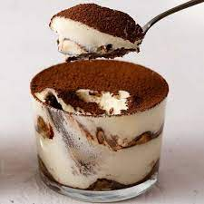
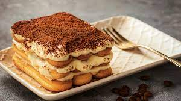
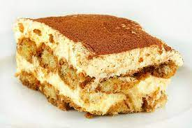

Tiramisu
Posted on June 13 , 2019/ Posted in No-Bake Recipes Buy on Amazon
  Tiramisu is a timeless no-bake Italian dessert combining espresso-dipped ladyfingers and a creamy lightly sweetened mascarpone cream This recipe is from the late Maida Heatter and is easily the best homemade tiramisu recipe that I've ever tried
Tiramisu is an elegant and rich layered Italian dessert made with delicate ladyfinger cookies, espresso or instant espresso, mascarpone cheese, eggs, sugar, Marsala wine, rum and cocoa powder. The delicate flavor of layers of mascarpone and Italian custard are contrasted with the darkly robust presence of espresso and sharpness of cocoa powder.

Dark rum is best , but you can use brandy or your favorite coffee liquer.
Most tiramisu recipes use whipped egg whites OR whipped cream in the mascarpone cream layers
Tiramisu is a no bake-dessert. The eggs yolks are gently cooked on the stovetop , but the egg whites are raw
This particular tiramisu recipe yields a large volume and the pass will be very full. Make sure your pan is large enough.